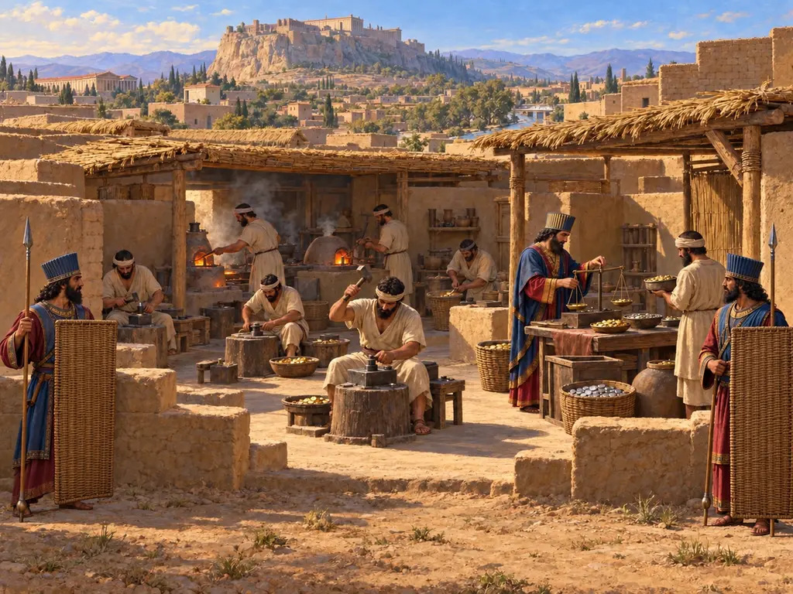
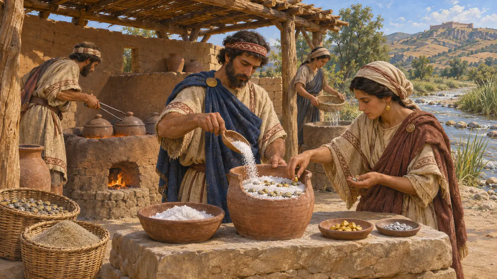
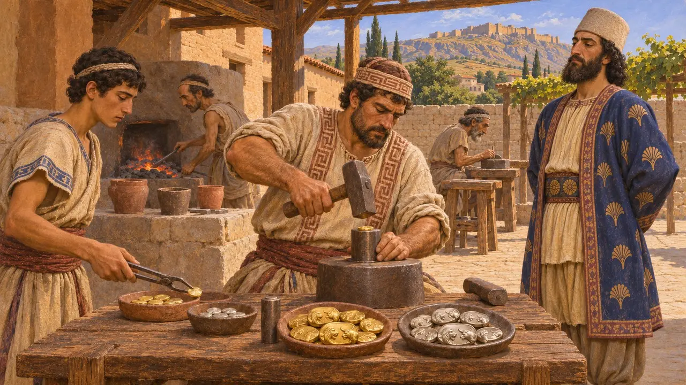
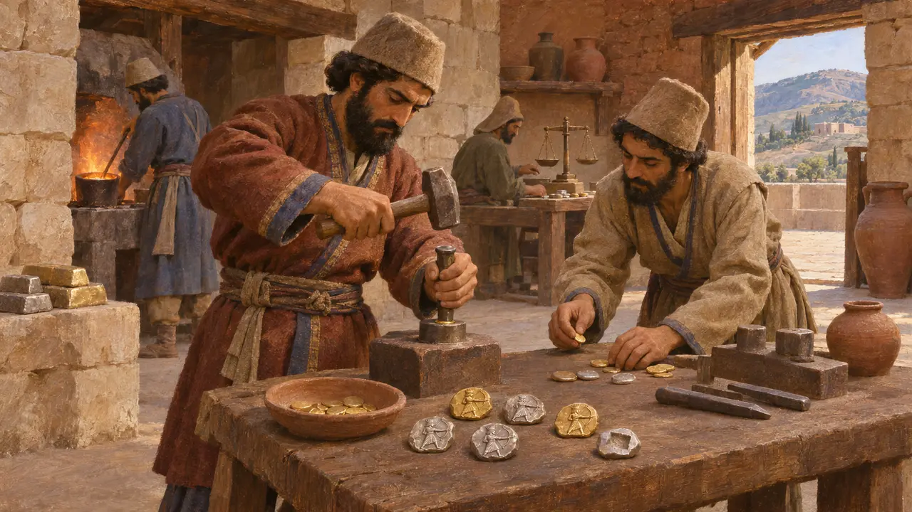
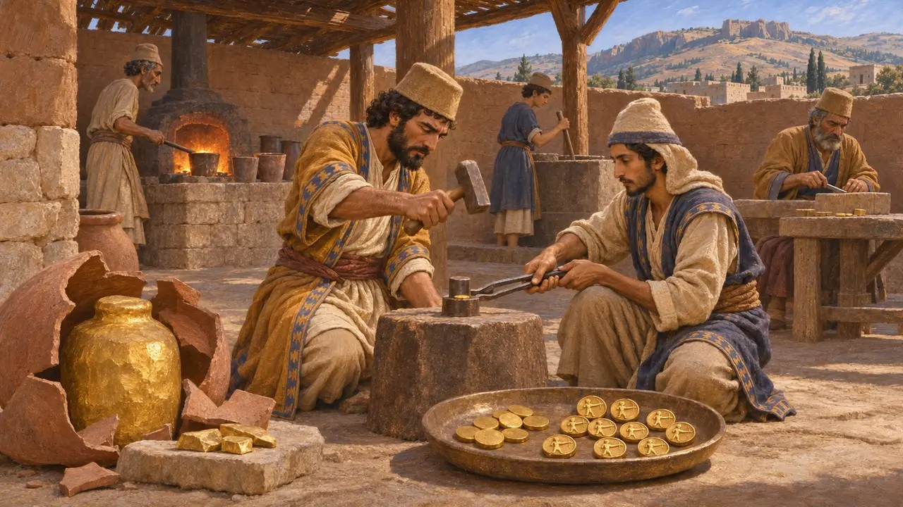
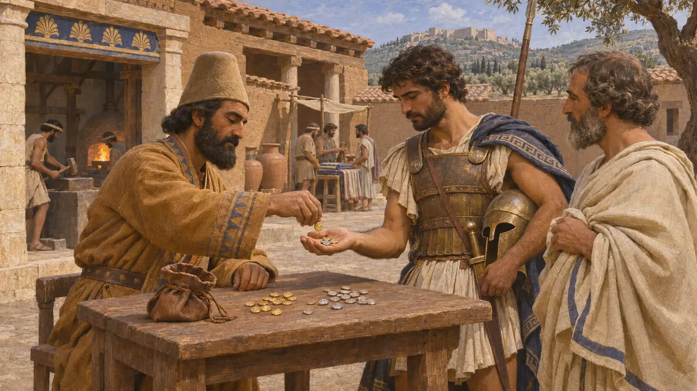

Casa da Moeda Real
Oficina que cunhava as moedas do arqueiro do Rei, provavelmente em Sardes, c. 500 AEC
No jogo: Nível 7: Sardes em Chamas, Nível 8: A Baía de Maratona, Nível 9: O Canal, Nível 10: Os Portões Quentes, Nível 11: O Final
Entre cerca de 515 AEC e 500 AEC, Dario começou a emitir moedas reais: dáricos de ouro e siglos de prata que mostravam o Rei como arqueiro. Sardes, a antiga capital lídia onde, segundo Heródoto, foram cunhadas as primeiras moedas de ouro e prata, foi provavelmente sua principal casa da moeda. As moedas serviam sobretudo às províncias ocidentais, pagando soldados e quitando obrigações, enquanto a maior parte do império ainda contava a riqueza em prata pesada na balança e em bens.
No jogo: A casa da moeda de Sardes converte o ouro do pátio de armazenagem, também necessário à cidadela e à frota, à taxa fixa de 12 de prata por 1 de ouro para o tesouro. A taxa é uma simplificação do jogo; Heródoto calculava o ouro em 13 vezes o valor da prata.

Ouro do Pactolo
Nos registrosOs escavadores de Sardes encontraram uma refinaria de ouro junto ao riacho Pactolo, datada do período lídio, no século VI. Ali, os trabalhadores separavam o ouro da liga natural de ouro e prata das areias do rio aquecendo-a com sal. Isso tornou possível cunhar moedas de ouro puro e de prata pura, em vez do eletro misto das primeiras moedas lídias.
A. Ramage and P. Craddock, King Croesus' Gold, 2000

Moedas lídias sob o domínio persa
DisputadoHeródoto diz que os lídios foram o primeiro povo a cunhar moedas de ouro e de prata. Peças de ouro e de prata com um leão e um touro, chamadas creseidas, são tradicionalmente atribuídas a Creso. Alguns numismatas defendem que muitas delas, sobretudo as emissões mais leves, foram cunhadas pelos persas em Sardes após sua conquista, por volta de 546 AEC, antes que Dario criasse seus próprios modelos.
Herodotus 1.94; I. Carradice, The 'regal' coinage of the Persian empire, 1987

As moedas do arqueiro real
Nos registrosAs moedas que sobreviveram mostram uma figura coroada com um arco. As mais antigas a mostram em meio corpo, e emissões posteriores a mostram ajoelhada para atirar ou correndo com arco e lança. O reverso traz apenas uma marca de punção tosca, sem inscrição. Um selo usado em tabuletas da Fortificação de Persépolis datadas de 500 AEC foi feito a partir de um siglos com o arqueiro, o que mostra que as moedas já existiam nessa época. Ainda se discute se o nome dárico vem do próprio Dario.
M. C. Root, Evidence from Persepolis for the dating of Persian and archaic Greek coinage, 1988

Heródoto sobre o ouro puro do Rei
Relato antigoHeródoto conta que Dario cunhou moedas de ouro refinado à máxima pureza. Acrescenta que Ariandes, governador do Egito, emitiu prata de igual pureza para rivalizar com o Rei, e Dario mandou matá-lo sob acusação de rebelião. Em outra passagem, Heródoto diz que o tributo era fundido e despejado em jarros de barro, que depois eram quebrados, e cortavam-se pedaços conforme a necessidade.
Herodotus 4.166; Herodotus 3.96

Onde as moedas eram usadas
Nos registrosDáricos e siglos são encontrados sobretudo no oeste da Ásia Menor e raramente na Pérsia, na Babilônia ou no Egito. No coração do império, os funcionários registravam salários em cevada, vinho e gado, e as tabuinhas do Tesouro de Persépolis indicam a prata por peso. As moedas eram, portanto, um instrumento das províncias ocidentais, onde cidades gregas, soldados e mercenários estavam habituados ao dinheiro cunhado.
P. Briant, From Cyrus to Alexander, 2002; I. Carradice, The 'regal' coinage of the Persian empire, 1987
Fontes
- Herodotus 1.94; 3.95-96; 4.166
- M. C. Root, Evidence from Persepolis for the dating of Persian and archaic Greek coinage, 1988
- I. Carradice, The 'regal' coinage of the Persian empire, 1987
- A. Ramage and P. Craddock, King Croesus' Gold, 2000
- P. Briant, From Cyrus to Alexander, 2002